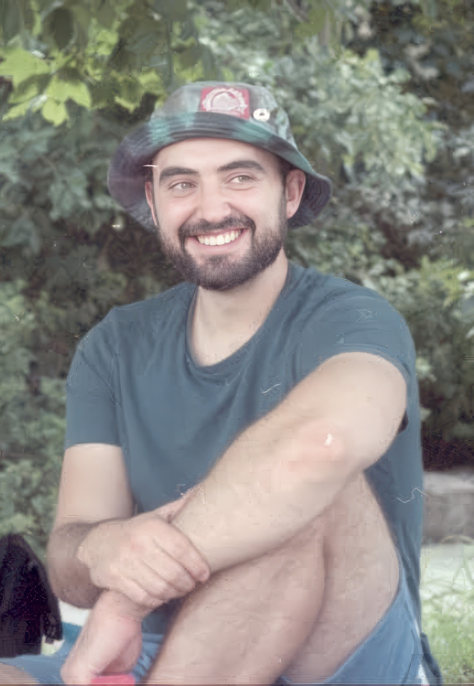

Visual designer, developer, and artist.

Marc Chicoine is a visual designer, front-end developer, and artist working across brand, UX, and fine art — based in Raleigh, NC.
He received his BA from Northwestern University in Cognitive Science and Communication, then moved to New York City to pursue his creative ambitions further. After several years designing within the education technology sector, he returned to school and earned an MFA from the Pratt Institute.
He is also a nationally showcased visual artist. Marc's paintings and sculptures focus on bodily narrative and metaphor. He's also a practitioner of House dance and Capoeira, and considers movement integral to how he makes visual work.